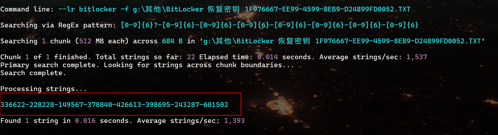
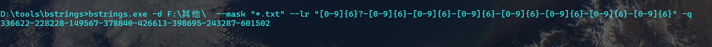
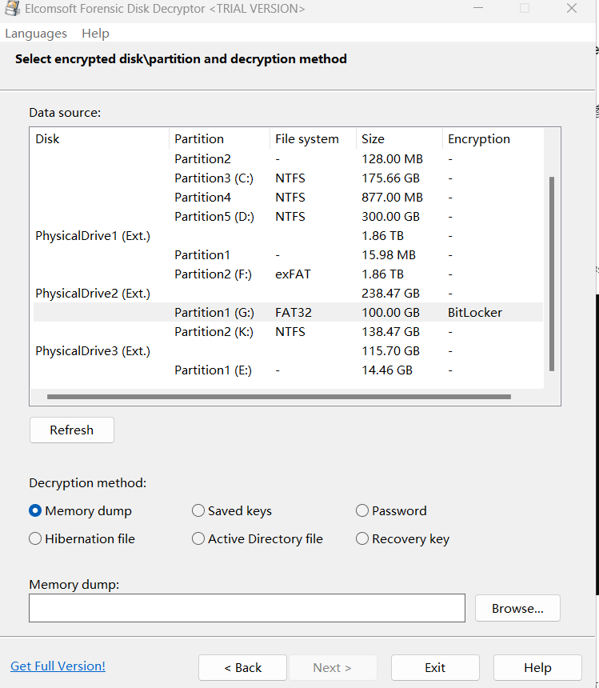
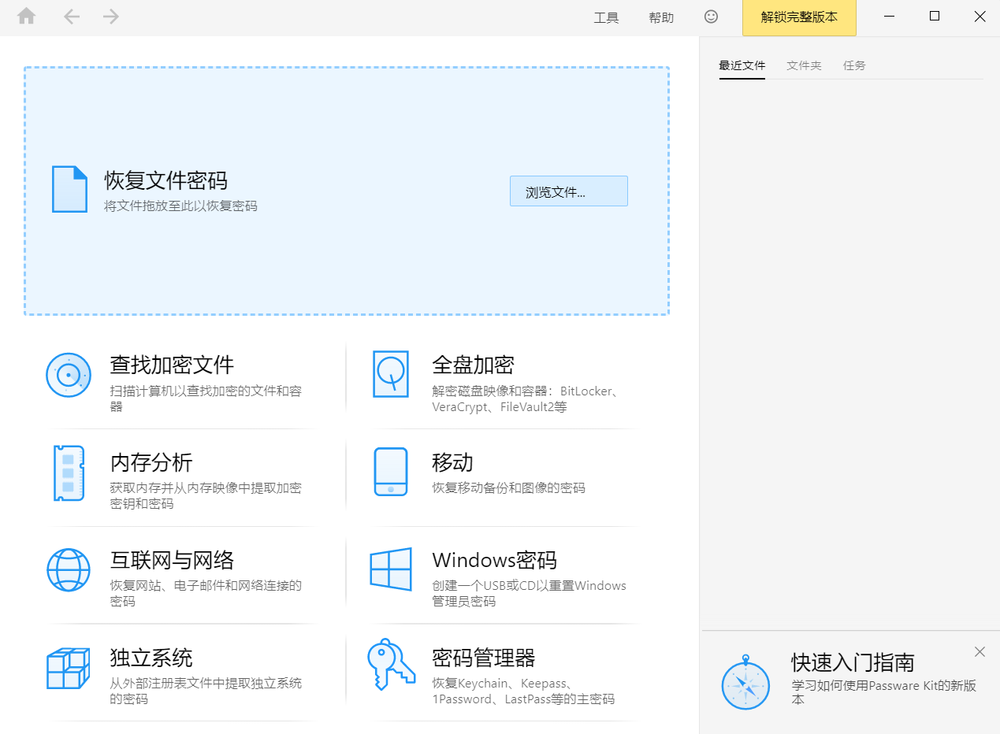
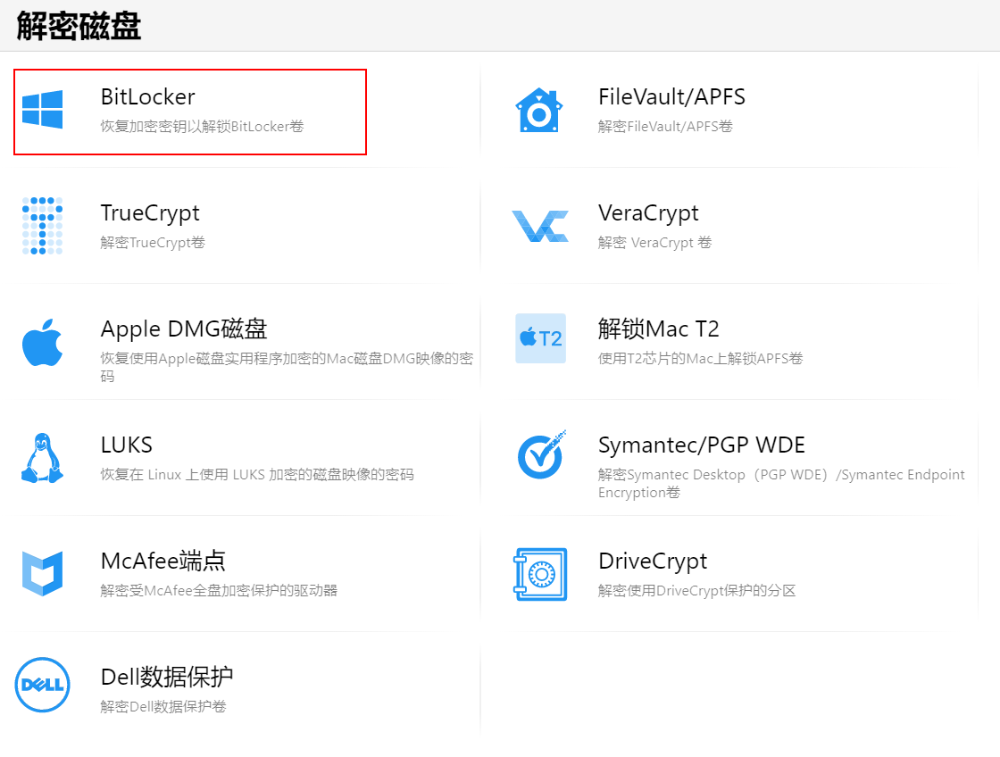
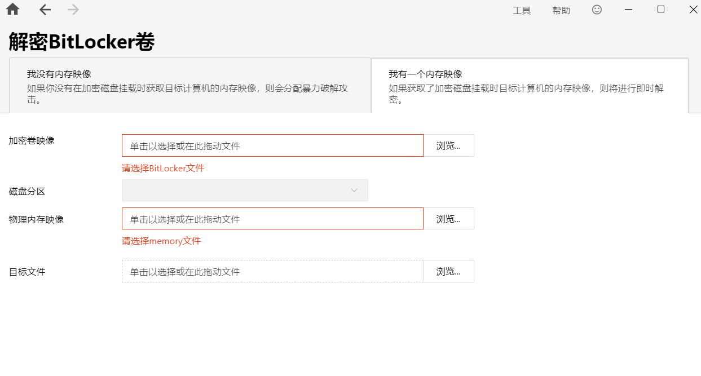
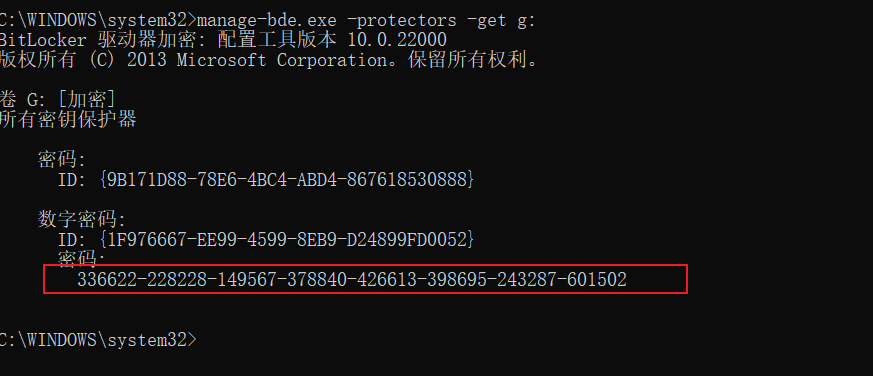
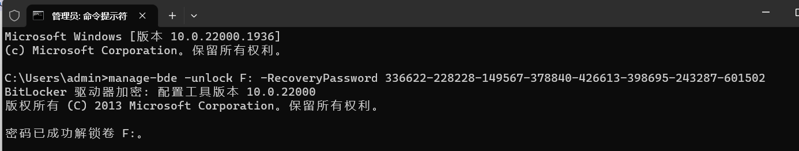
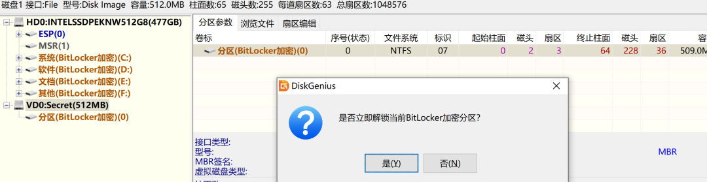

BitLocker驱动器加密是在WindowsVista内首次提供的操作系统的一项数据保护功能。
后来的操作系统版本不断改进BitLocker保护锁提供的安全性，从而允许操作系统为更多驱动器和设备提供BitLocker保护。将BitLocker与操作系统集成后，可以消除由于计算机丢失、被盗或解除授权不当而导致的数据被盗或公开的威胁。 –百度百科
BitLocker驱动器加密通过加密Windows操作系统卷上存储的所有数据可以更好地保护计算机中的数据，Bitlocker的解锁方式主要有三种：TPM、PIN、恢复密钥：
主动加密（PIN）：用户主动利用BitLocker加密磁盘。
被动加密（TPM）：非用户自行加密，出厂自带基于TPM的BitLocker加密，一般见于品牌笔记本（一般情况下是“等待激活状态”而此时底层代码已有BitLocker分区标记，且底层加密，但是在BitLocker信息区存在公开密钥，因此Win10操作系统可以直接识别这种状态并直接显示分区内容）。
恢复密码：恢复密钥是一个最短48位的数字，可以被制作成密钥文件存储于U盘作为解密工具。
0x1、搜索恢复密钥文件
搜索保存到U盘或文件
有些计算机的恢复文件保存在计算机内部，保存密钥的文档默认字符编码为Unicode字符编码。文件名默认开头为“BitLocker 恢复密码”，hex为:FFFE62600D59C65BA594。内容中密钥正则为[0-9]{6}?-[0-9]{6}-[0-9]{6}-[0-9]{6}-[0-9]{6}-[0-9]{6}-[0-9]{6}-[0-9]{6}


TODO：使用go实现小工具**[**BitLocker密钥搜索工具]
1、查找Unicode文件的BOM,hex:FFEF
FF FE 42 00 69 00 74 00 4C 00 6F 00 63 00 6B 00 65 00 72
2、优先查找hex为:0062600D59C65BA594（恢复密钥）
0x2、计算机系统内存
前提条件是内存中残留有密钥，并且我们在需要取内存文件（或者睡眠文件hiberfil.sys、Active Directory数据库文件）与磁盘镜像；对于没有获取到内存镜像的加密磁盘，Elcomsoft Forensic Disk Decryptor可基于加密磁盘生成后缀为.esprbltg的文件，基于该文件，可在Distributed Password Recovery中对密钥进行暴力破解。
来自俄罗斯的EFDD（Elcomsoft Forensic Disk Decryptor）工具可以破解加密的磁盘。参考链接【内存取证】破解BitLocker加密

使用Passware Kit软件，Passware Kit是综合型解密工具，可以破解压缩包、文档、系统等密码。
选择【全盘加密】

【bitlocker】解密

依次填入虚拟磁盘文件、待解密的分区、内存镜像文件，存放解密磁盘文件路径。解密时间受镜像大小和电脑性能影响。

0x3、系统工具
解开后的加密卷可以通过Windows自带的命令manage-bde -protectors -get [盘符]查看其恢复密钥串，如下图。

0x4、暴力破解
BitLocker使用AES（高级加密标准/Advanced Encryption Standard）128位或256位的加密算法进行加密，从理论上来说可破解，但随着密码长度以及密码复杂度的变化，恢复时间呈指数级增加。一般sha128破解可需要2000年时间。
0x5、解锁
cmd命令提示符中输入恢复密码
manage-bde -unlock F: -RecoveryPassword 336622-228228-149567-378840-426613-398695-243287-601502

也可以使用其他软件完成：
找到恢复密码的可以使用DiskGenius软件来进行BitLocker的解密，选择磁盘->打开虚拟磁盘文件，选择Secret文件：

...